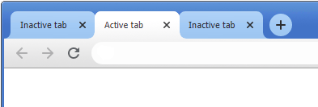
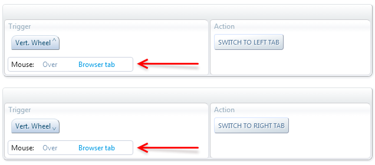
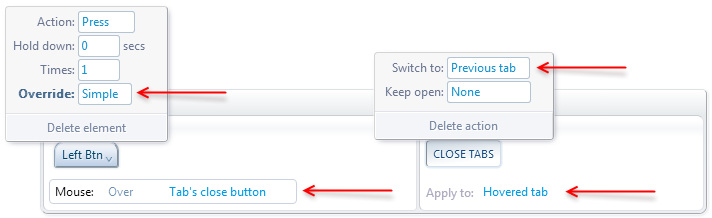
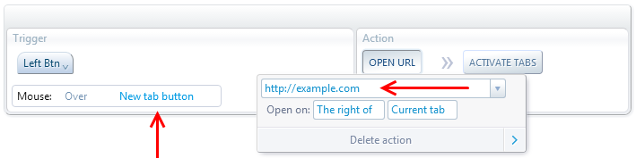
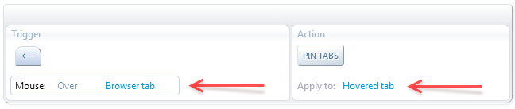
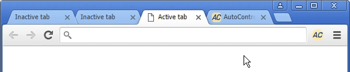
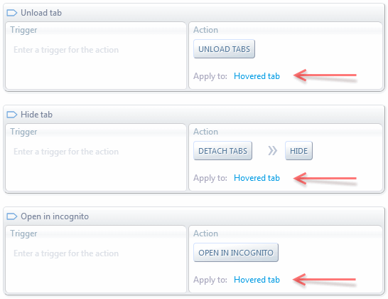
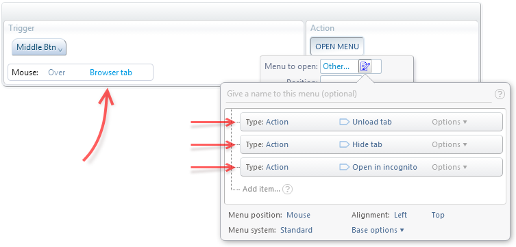

AutoControl lets you define shortcuts that are sensitive to the element the mouse is hovering over.
Such shortcuts will trigger their action only if the mouse is over specific elements of the browser window or specific menu items in an AutoControl menu.
Let's see some useful examples.
On this example we'll use the scroll wheel to switch between the tabs in the current window, but only if the mouse is hovering over the tab strip.
Step 0/0: undefined

We need two shortcuts for this: Scroll Up will switch to the left tab and Scroll Down will switch to the right tab, as shown bellow.

Both shortcuts must have a Mouse-over condition set to Browser tab, as shown in the image. This will restrict the shortcuts to trigger their
action only if the mouse is hovering over any of the tabs in the tab strip.
Customize the tab's close button
When you close the active tab in a window, the browser must decide which tab to activate next.
In most cases that tab will be the one to the right of the tab being closed.
In this example we'll customize this by overriding the browser's native action when we click on a tab's close button.
Step 0/0: undefined
What we want is that the next tab to become active is the one we were using right before the tab being closed. i.e. the previously used tab.
To achieve this, we must override the pressing of the Left mouse button whenever the mouse is over a tab's close button.
And the action we'll do instead is to close the hovered tab and then switch to the previous tab.

The "Mouse over" condition shown in the above image (left side) plus the "Hovered tab" tab selection (right side) form a powerful combination
that allows us to intercept the browser's native click actions and replace them with our own actions.
Customize the URL of the new tab page
When we click on the "New Tab Button", the default behavior is to open the New Tab Page (chrome://newtab)
in a new tab at the rightmost position in the window. Step 0/0: undefined
In this example, we'll change that default behavior in two ways:
The new tab will be opened to the right of the current tab
As in the previous example, on the trigger side we have to override the left mouse button, but only when the mouse is over the New Tab Button.
Then, on the action side, the Open URL action will open the desired URL in a new inactive tab and then
Activate tabs will activate that new tab.

Pin a tab by dragging it to the left
On this example we'll take advantage of the following two features:
When a mouse gesture has a "Mouse over" condition, that condition applies to the point the mouse was when the gesture started.
If an action is triggered by a mouse gesture, the "Hovered element" for that action will be the one the mouse was hovering when the gesture started.
More info about this at Determining the hovered element.
So, let's go ahead and define the mouse gesture that's going to be our "drag to the left" action, as shown in the image bellow.
This gesture must perform its action only if done over a tab in the tab strip, so we must add the "Mouse over browser tab" condition.

And the action will be to pin the tab the mouse is hovering over. But since the action is triggered by a gesture,
that tab is going to be the one the mouse was hovering over when the gesture started instead of the tab the mouse is hovering when the gesture is finished.
Finally, here is the gesture being performed in live-action:

Custom context menu when middle-clicking a tab
Analogous to the previous example, we'll now take advantage of another special feature:
When an action is triggered from an AutoControl menu, the "hovered element" for that action is
the element the mouse was hovering over when the menu was open.
More info about this feature at Determining the hovered element.
We can use this to open a menu of actions when hovering some element. Then, when clicking on an action in the menu, that action will operate on
the element the mouse was hovering.
So, let's define such a menu to perform some actions on a hovered tab, as shown in the following image.
First, we must define the actions that will go in the menu. More info about creating action menus at Create custom action menus.
Let's create the 3 actions shown below. Each action must be applied to the "Hovered tab". That way they will operate on the tab the mouse
was hovering when the menu was opened.

Now we have to define the shortcut for opening the menu when the mouse is hovering a tab. Let's use the middle mouse button for that.
As shown in the image bellow, on the trigger side we enter Middle Btn with the condition "Mouse over browser tab".
That way the menu will appear only if we middle-click on a tab in the tab strip.
Then, on the action side, we must use the Open menu action and create our custom menu with the 3 actions defined above.

That's it, we're done. Now whenever we click on a tab with the middle button, our splendid menu will pop up for quick and easy access
of any custom action we want.
Who needs lame shortcuts... menus for the win!
 Forum
Install now from theChrome Web Store
Forum
Install now from theChrome Web Store